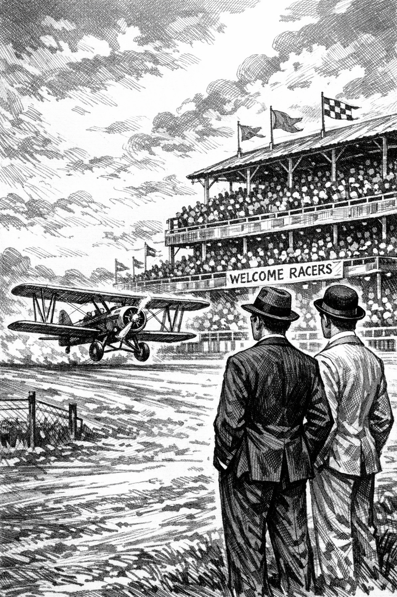
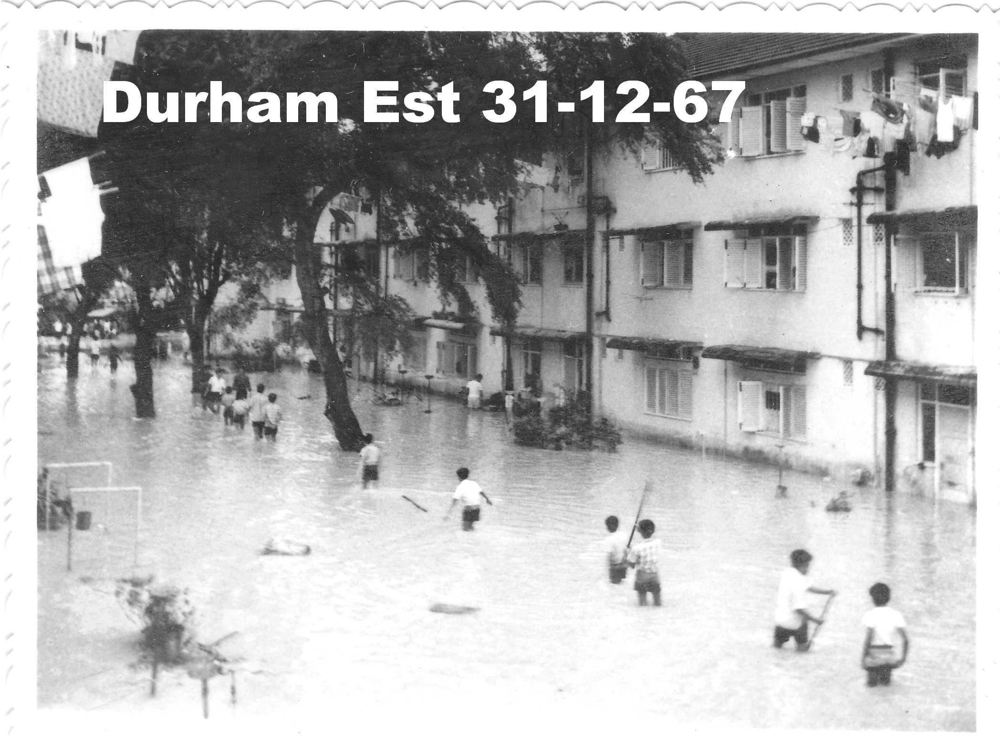
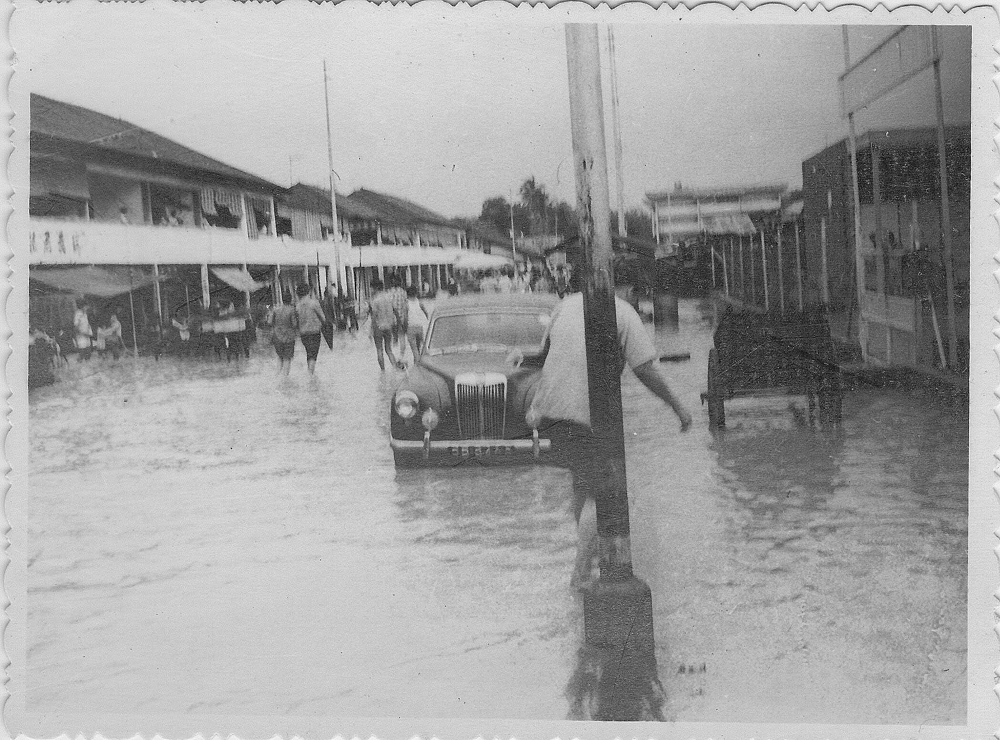
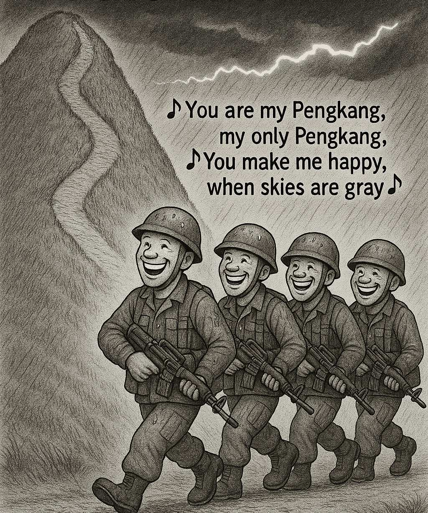
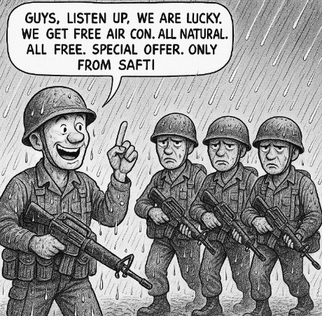

.
Farrer Park had been a race course in early 1900s.
In Dec 1919, a plane, piloted by Cpt Ross Smith, landed here for a stopover. He was on his way to Darwin as part of the London-Darwin Air Race. He won the race. Ref 18: Singapore Free Press and Mercantile Advertiser, 5 Dec 1919.
.
.
.

Kids having a splashing good time, Dec 1967
.

The old Community Centre is on the right. That place was where, in late 1960s, pioneer batches of young men were sent off for NS
.

PengKang Hill was also dubbed "Peng San" Hill ("Peng San" means to faint from exhaustion). In those days, trainees were not asked to run up hills during bad weather, due to lightning risk.
Years later, many NSmen recounted that running up hills improved their health.
Luckily, today, most NSmen have access to their own "PengKang Hill" - the HDB block staircase, typically 18 odd floors high. Any weather ! All free !
.

It was raining heavily. Morale was low. Sgt pulled us together and uttered his memorable quip on "Air Conditioning, the SAFTI way".
He explained that soldiers need grit and gumption to endure physical discomfort. Also, soldiers need to have a positive, "can do" attitude, to survive combat.
When we got wet, he got wet. When we ran up hills, he ran with us, pushing, cajoling, encouraging.
Later, he went for Officer Training, passed, and became Officer.
.
Press the 3-bar menu at top right to go next page or back to top
.